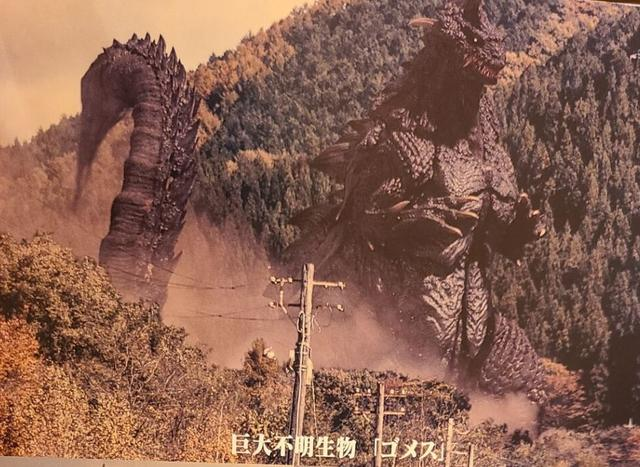

知名冠位归曼厨兼知名导演庵野秀明的新·奥特曼已经上映了，虽然我们这边正在快马加鞭的送审中，但我们这些奥迷已经等不及了，话说这部新·奥特曼到底说了怎样的故事？不说了，现在赶紧端上来吧！

如果看过以前上译的昭和奥译制片，肯定不会忘记百特星人那句名台词“消灭奥特曼的计划是佐菲定的”，万万没想到的是，日本那边也有类似的梗，当年的图书在印刷的时候不小心印错了，把佐菲说成一个不带好意的宇宙人。

结果，痞子把这个万年老梗变成真实，佐菲真的变成了反派，美菲拉斯星人成为了那个大人的小弟，并且还带来一只特别大的杰顿，至于那个视角，可以参考一下扳机仔遇上超巨大邪特的那一幕。
佐菲跳反的原因是：因为曼哥哥触犯了种族禁忌与人类融合，而且美菲拉斯星人也用技术证明了人类也可以巨大化，佐菲认为人类具有威胁性，所以佐菲作为替代曼哥哥的地球观察员，决定召唤杰顿毁灭地球。